Add completed-count, duration, and satisfaction KPIs to 「Grow bulk order revenue」. Complete another process, answer its surveys, and compare the refreshed measurements.
Your installation needs these fixes
The run screens in this chapter were captured on an installation with the following fix applied (2026-10-30). Before this fix reaches the installation repository, the strategy service may fail to connect. This notice will be removed once the fix is included.
- Installation: process-gpt-infra-docker #1 — fixes the strategy service's graph database connection.
Connect execution records to an objective#
In Chapter 16, you read execution times and bottlenecks. Now you will create a strategic objective and connect process records and survey responses to its KPIs.
Jinyoung Jang creates the objective and KPIs as the admin. Minji Kim completes another sales proposal and answers a survey. Jinyoung also answers, then refreshes the measurements.
The objective is 「Grow bulk order revenue」. Its KPIs count completed proposals, measure approval time, and collect proposal satisfaction. This exercise does not measure revenue itself. Keep the objective's name separate from what its KPIs actually measure.
Try it 1 — Explore the strategy board#
- Open 「Strategy Board」.
- Read 「BSC strategy map · KPIs · initiatives」.
- Find 「Financial」, 「Customer」, 「Internal Process」, and 「Learning & Growth」.
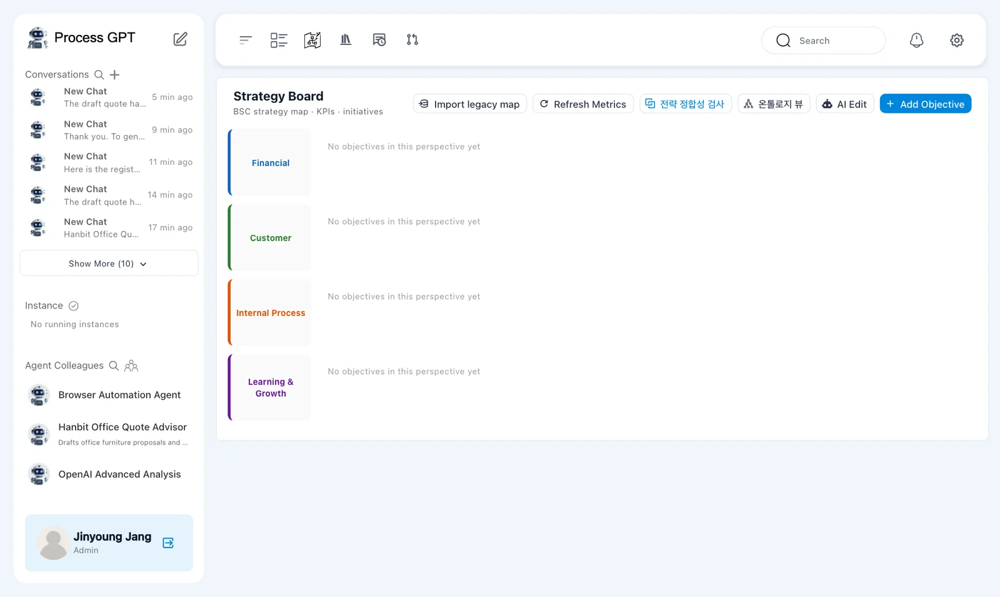
Each empty perspective shows 「No objectives in this perspective yet」. The controls include 「Import legacy map」, 「Refresh Metrics」, 「AI Edit」, and 「Add Objective」.
Two buttons remain in Korean: 「전략 정합성 검사」 means strategy consistency check, and 「온톨로지 뷰」 means ontology view.
This exercise adds one objective under 「Financial」. You do not need to fill all four perspectives to test KPI measurements.
Try it 2 — Add the strategic objective#
- Click 「Add Objective」.
- Set 「Name」 to 「Grow bulk order revenue」.
- Set 「Description」 to 「Grow revenue from bulk orders (20 or more pieces of office furniture)」.
- Choose 「Financial」 in 「Perspective」.
- Keep 「Strategic importance」 at 3 and click 「Save」.
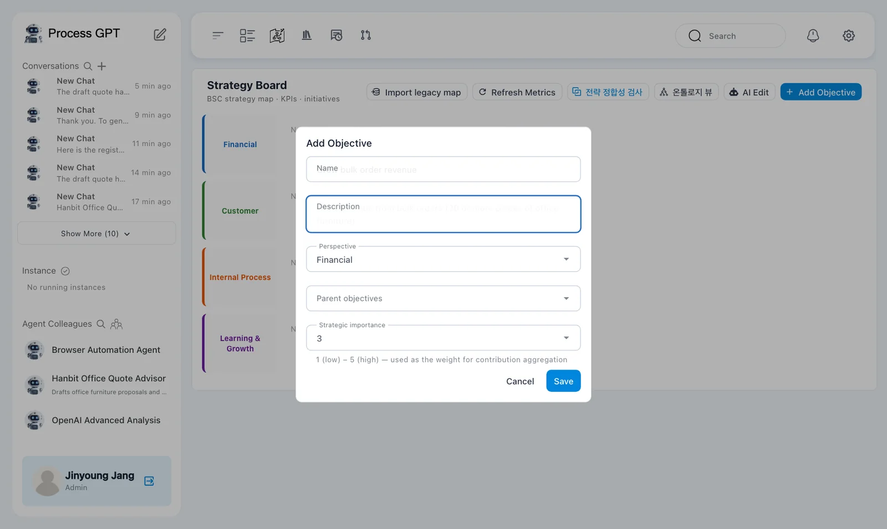
The dialog also has 「Parent objectives」. This is the first objective on the board, so no parent is needed for the exercise.
「Strategic importance」 includes the explanation 「1 (low) – 5 (high) — used as the weight for contribution aggregation」.
The description's “20 or more” threshold describes the objective. It does not automatically filter the completed-count KPI by order quantity. That KPI will count completions of a linked process definition.
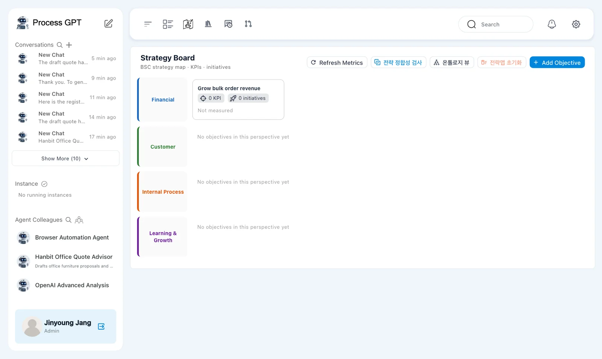
The card initially shows 「0 KPI · 0 initiatives · Not measured」. A Korean 「전략맵 초기화」 button also appears after the first objective; it means reset strategy map.
Try it 3 — Add the proposal-count KPI#
- Open the 「Grow bulk order revenue」 card.
- Choose the 「KPI」 tab and click 「Add KPI」.
- Enter the settings below.
- Check the linked process, unit, baseline, target, and direction, then save.
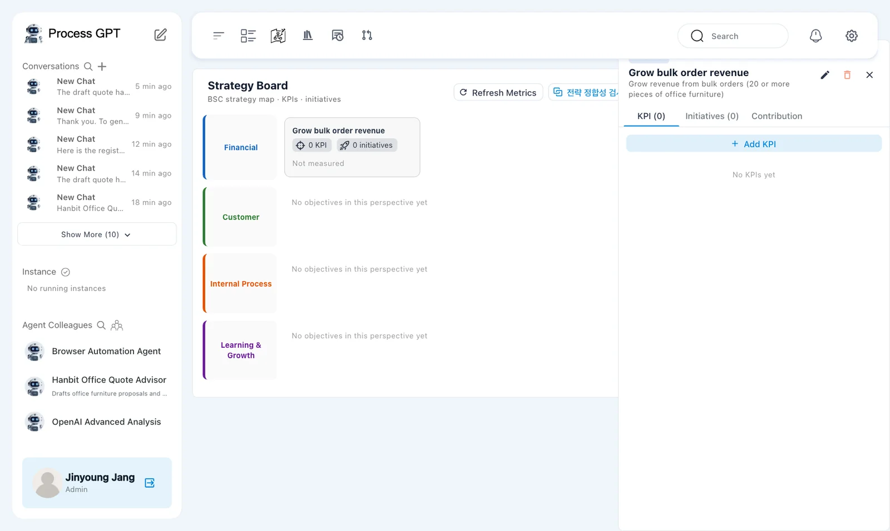
The panel has 「KPI」, 「Initiatives」, and 「Contribution」 tabs. This exercise adds KPIs only.
| Field | Value |
|---|---|
| 「Name」 | 「Sales proposals sent」 |
| 「Measure type」 | 「Completed count」 |
| 「Linked process definition」 | 「Sales Proposal Submission」 |
| 「Unit」 | cases |
| 「Baseline」 | 0 |
| 「Target」 | 10 |
| 「Direction」 | 「Higher is better」 |
For 「Description」, explain that this KPI counts completed sales proposal processes. This makes its scope clear.
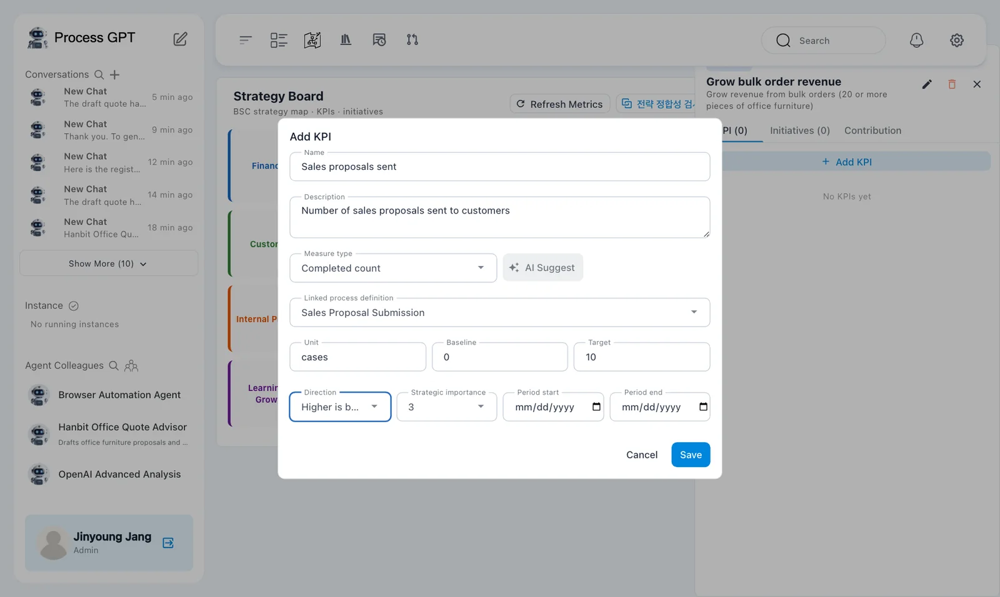
The dialog also includes 「AI Suggest」, 「Strategic importance」, 「Period start」, and 「Period end」. This chapter enters the measured KPI types and targets directly.
The KPI name says proposals sent, but the selected measure is 「Completed count」. It counts completion records for the linked process. It does not read an email system to verify messages sent.
Try it 4 — Add the approval-time KPI#
- Click 「Add KPI」 again.
- Enter the settings below for 「Proposal approval time」.
- Check that the baseline and target use hours.
- Choose 「Lower is better」 and save.
| Field | Value |
|---|---|
| 「Name」 | 「Proposal approval time」 |
| 「Measure type」 | 「Avg duration」 |
| 「Linked process definition」 | 「Sales Proposal Approval」 |
| 「Unit」 | hours |
| 「Baseline」 | 48 |
| 「Target」 | 24 |
| 「Direction」 | 「Lower is better」 |
Use 「Description」 to explain that this measures average elapsed time from the customer request through sending the approved proposal.
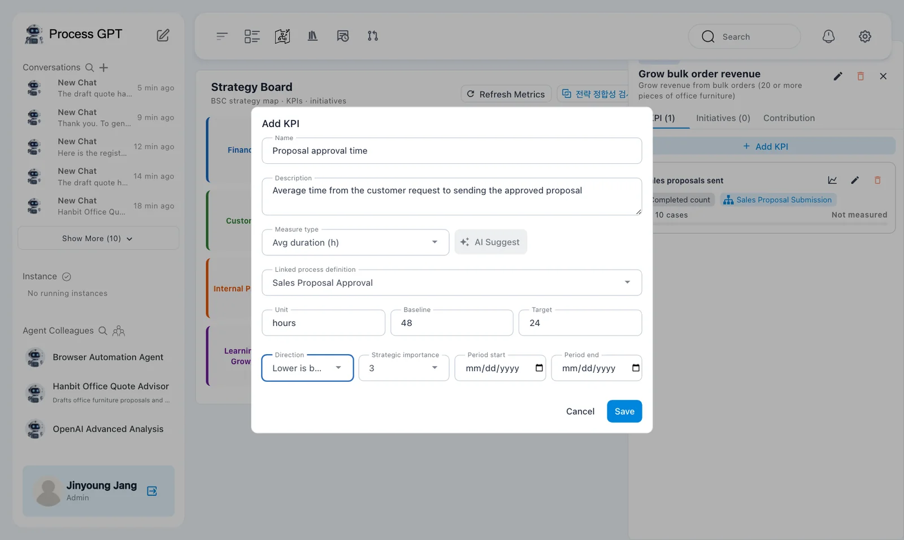
The count KPI improves as its value rises. The duration KPI improves as its value falls. Do not enter a number of minutes or seconds into a target expressed in hours.
This chapter uses 「Completed count」, 「Avg duration」, and 「Survey score」. It does not connect an external revenue system.
Try it 5 — Refresh the first measurements#
- Click 「Refresh Metrics」 on the board.
- Check the objective card.
- Open the objective panel and read both KPI values.
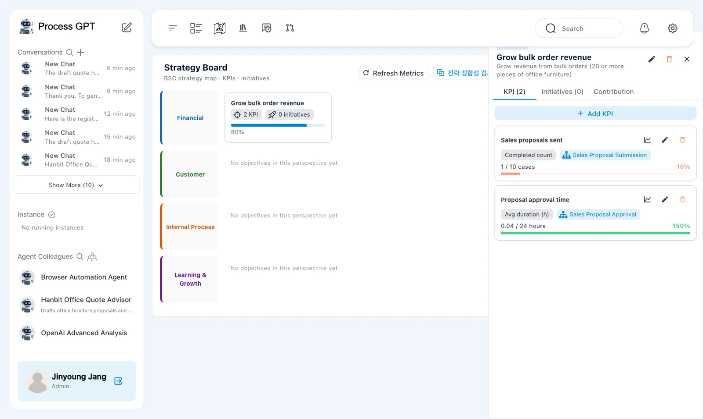
The panel shows:
| KPI | Current / target | Achievement shown |
|---|---|---|
| 「Sales proposals sent」 | 「1 / 10 cases」 | 10% |
| 「Proposal approval time」 | 「0.04 / 24 hours」 | 150% |

The duration KPI appears as 「Avg duration (h)」 in the measured panel. It is set to 「Lower is better」. The practice runs were much shorter than the 24-hour target, so the displayed achievement reached the 150% cap.
150% is not a time-saving percentage
Read 150% as the displayed KPI achievement. It does not mean elapsed time fell by 150%. Read it together with the current value of 0.04 hours, the 24-hour target, and 「Lower is better」.
Try it 6 — Add a satisfaction survey KPI#
- Click 「Add KPI」 in the objective panel.
- Set 「Name」 to 「Proposal satisfaction」. Use 「Description」 to explain that it measures participants' satisfaction after the proposal process.
- Choose 「Survey score」 in 「Measure type」 and 「Sales Proposal Submission」 in 「Linked process definition」.
- Set 「Unit」 to points and 「Target」 to 4.5.
- Under 「Survey questions (auto-sent on process completion)」, click 「Add question」.
- Enter 「How satisfied were you with this proposal?」 for Q1, then save.
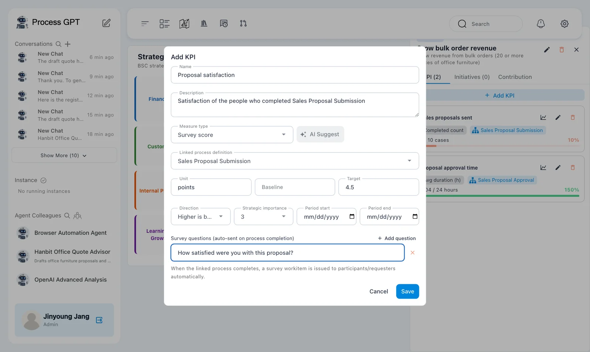
The dialog explains: 「When the linked process completes, a survey workitem is issued to participants/requesters automatically.」
Entering a target of 4.5 does not create a measured score of 4.5. Responses must be collected first.
This exercise surveys process participants. It does not demonstrate a survey sent to an external customer. In the captured run, Minji and Jinyoung received the survey workitems.
Try it 7 — Complete another proposal process#
After saving the survey KPI, run 「Sales Proposal Submission」 again using the method from Chapter 6.
- As Jinyoung, run 「Sales Proposal Submission」.
- Enter the customer request below.
- As Minji, complete the proposal task with the response below and click 「Submit Complete」.
- Check that the process is 「COMPLETED」.
- Find 「설문: Proposal satisfaction」 in Minji's 「Task List」.
Customer request:
Hanbit Trading needs 8 standing desks for its Pangyo office, with a budget of KRW 8,000,000, installed in mid-December.
Minji's proposal:
Pangyo office proposal: 8 standing desks, about KRW 7,200,000 (VAT excluded), installed in the 3rd week of December.
Both Minji and Jinyoung received survey workitems after completion.
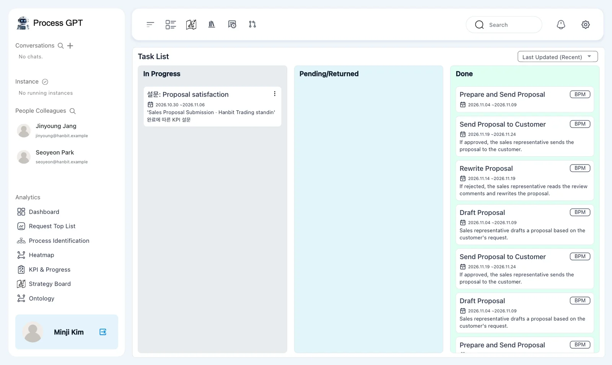
The generated workitem still has the Korean prefix 「설문:」, meaning survey. Its description also contains 「완료에 따른 KPI 설문」, meaning a KPI survey following completion. Check the instance named in that description.
The objective description does not filter the KPI
The objective describes orders of 20 or more pieces. This new order has only eight desks, but completing the linked process still increases the count. The quantity condition in the objective description is not automatically applied to the KPI.
Try it 8 — Answer the surveys as Minji and Jinyoung#
- Open Minji's 「설문: Proposal satisfaction」 workitem.
- Read the completed process name and 「How satisfied were you with this proposal?」.
- Choose five stars.
- Enter the comment below and click 「Submit」.
- Check for 「Thank you for your response!」.
- Open Jinyoung's survey for the same instance, choose four stars, and submit it.
The request was clear, so I could send the proposal quickly.
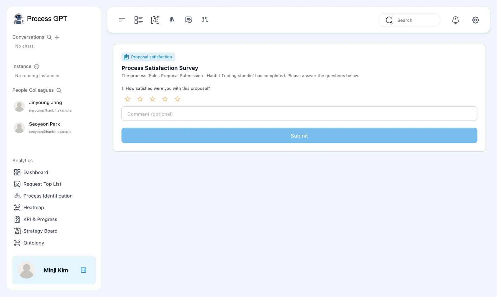
The screen is titled 「Proposal satisfaction」 and 「Process Satisfaction Survey」. It says:
The process 'Sales Proposal Submission · Hanbit Trading standin' has completed. Please answer the questions below.
Read the process name before responding so that the rating applies to the intended execution.
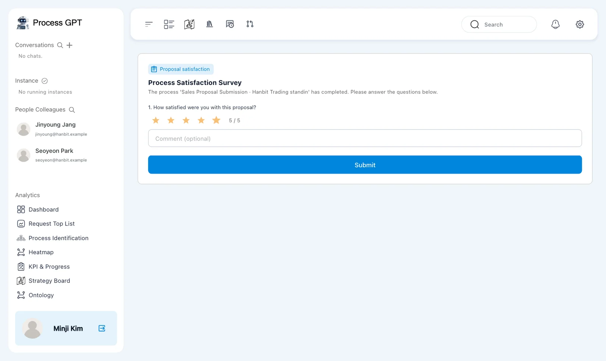
Minji gave 5 points, and Jinyoung gave 4. These are practice values used to demonstrate measurement. They are not the correct satisfaction ratings for every execution.
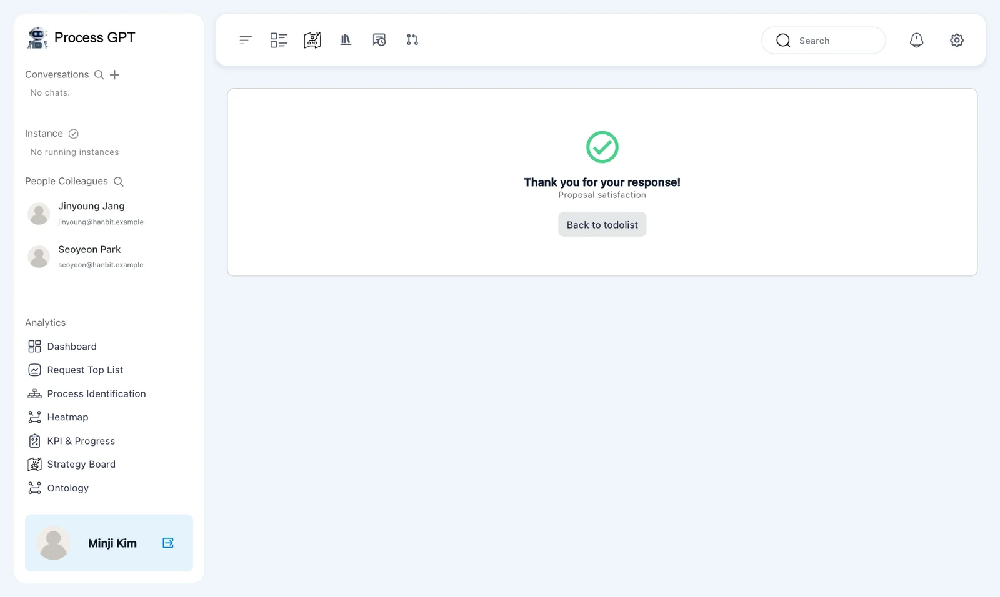
After submission, the screen offers 「Back to todolist」. Submitting responses and refreshing the strategy measurements are separate actions.
Try it 9 — Compare the second measurements#
- As Jinyoung, return to 「Strategy Board」.
- Click 「Refresh Metrics」.
- Open 「Grow bulk order revenue」 and read all three KPIs.
- Compare them with the first measurements.
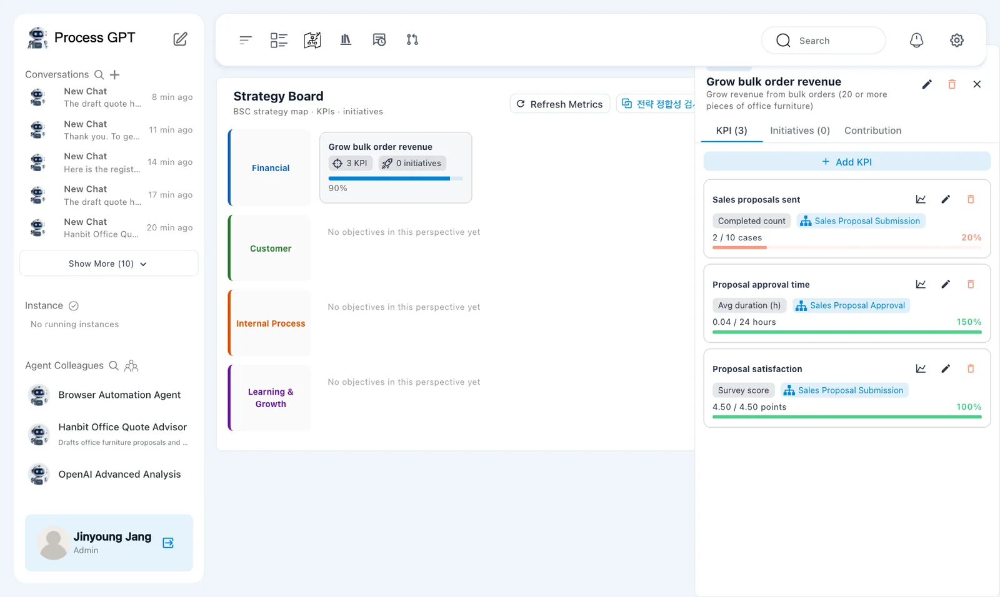
| KPI | Second measurement | Achievement shown |
|---|---|---|
| 「Sales proposals sent」 | 「2 / 10 cases」 | 20% |
| 「Proposal approval time」 | 「0.04 / 24 hours」 | 150% |
| 「Proposal satisfaction」 | 「4.50 / 4.50 points」 | 100% |
The proposal count rose from 1 to 2. Satisfaction now shows 4.50, matching the average of the two responses: (5 + 4) ÷ 2 = 4.5.
Approval time stayed at 0.04 hours. The new execution was 「Sales Proposal Submission」. The duration KPI is linked to 「Sales Proposal Approval」, a different process definition.
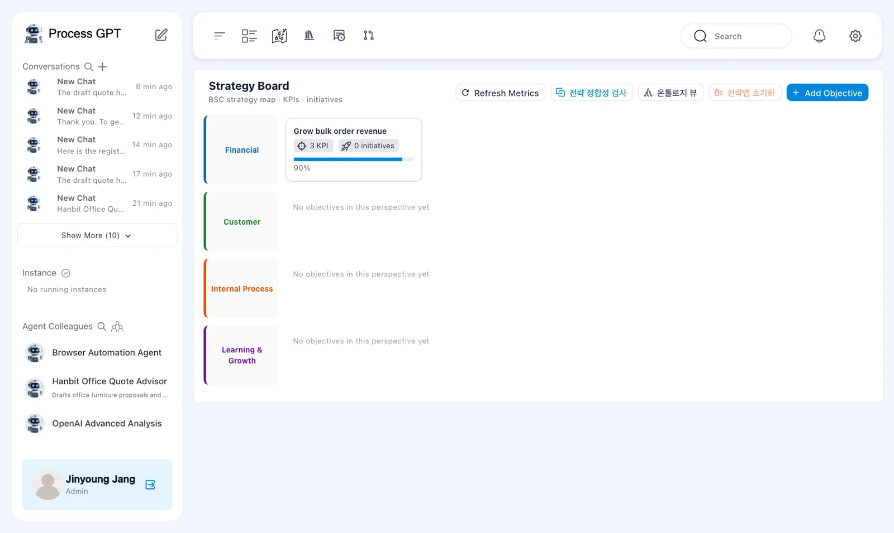
The objective card shows 「3 KPI · 0 initiatives · 90%」. This summarizes the configured KPIs. It is not a measurement of actual revenue.
Try it 10 — Check overall progress and the ontology#
- Open 「KPI & Progress」 and read overall strategy achievement.
- Read the lower KPI and process-pipeline sections separately.
- Return to the board and open 「온톨로지 뷰」 to inspect the ontology.
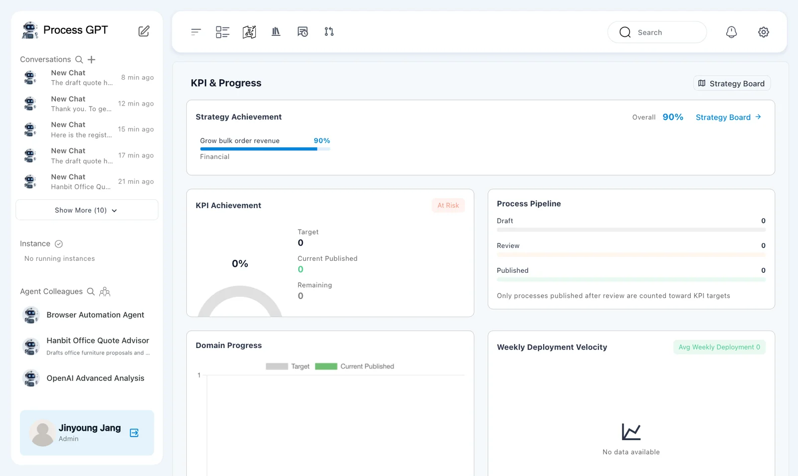
The top shows 「Strategy Achievement Overall 90%」 and 「Grow bulk order revenue 90% Financial」.
The lower 「KPI Achievement」 section shows 「At Risk 0%」, 「Target 0」, and 「Current Published 0」. 「Process Pipeline」 shows 0 for 「Draft」, 「Review」, and 「Published」.
The explanation says 「Only processes published after review are counted toward KPI targets」. 「Weekly Deployment Velocity」 shows 「No data available」.
These sections do not measure the same thing
Overall achievement is 90%, while another section shows 「At Risk 0%」. Pipeline counts of 0 do not mean no process instances were completed. Keep each value with its section name and explanation. The captured evidence does not establish every relationship between these aggregates.
The ontology page remains almost entirely Korean in English mode. Its heading is 「기업 운영 온톨로지」, meaning enterprise operations ontology. Its subtitle describes four layers: strategy, process, resources, and knowledge.
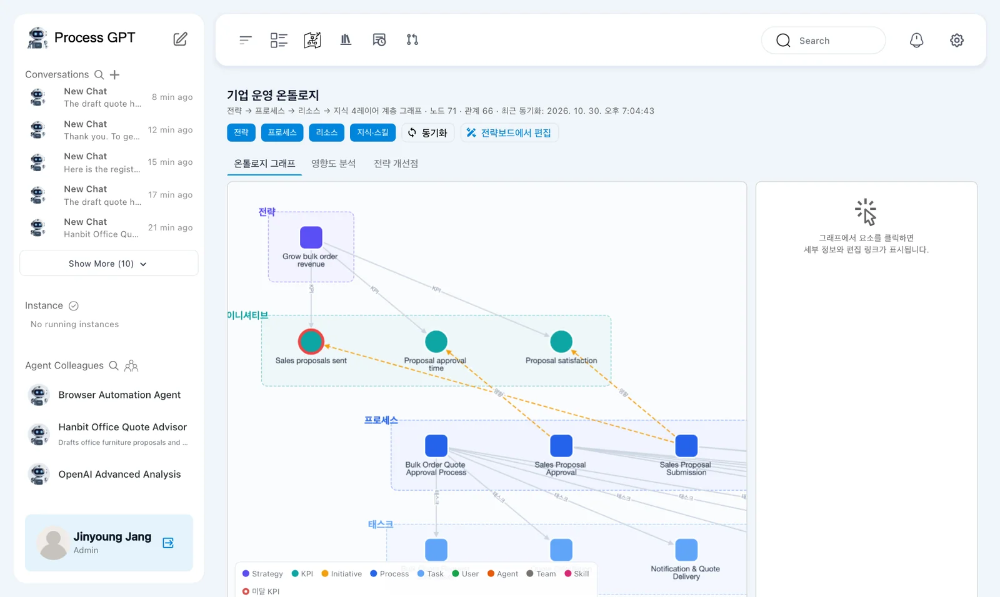
The run shows 「노드 71」 and 「관계 66」: 71 nodes and 66 relationships.
The tabs include 「온톨로지 그래프」, 「영향도 분석」, and 「전략 개선점」, meaning ontology graph, impact analysis, and strategy improvements. 「전략보드에서 편집」 means edit in the strategy board.
The English legend includes Strategy, KPI, Initiative, Process, Task, User, Agent, Team, and Skill. This view helps inspect connections. Node and relationship counts do not prove that a strategy is appropriate.
Next chapter#
You attached three KPIs to an objective and refreshed their measurements after another completion and two survey responses. You separated the objective description, measurement scope, and displayed achievement.
In Chapter 18, you will review settings. In Chapter 19, you will combine these skills in a final project.
Check your understanding
- Which direction did you choose for proposal count and approval time?
- What produced the satisfaction score of 4.50?
- Does the objective's 90% mean Hanbit Office achieved 90% of a revenue target?
Answers
- 「Higher is better」 for proposal count, with a target of 10 cases. 「Lower is better」 for approval time, with a target of 24 hours.
- After adding the survey KPI, another 「Sales Proposal Submission」 instance completed. Minji answered 5 and Jinyoung answered 4. Jinyoung then clicked 「Refresh Metrics」.
- No. This exercise measured process completions, duration, and participant satisfaction, not revenue. The objective's quantity threshold also did not automatically filter the completed-count KPI.